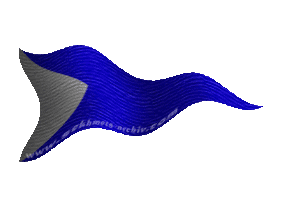
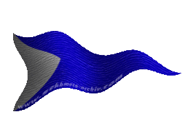

| Übersicht,
Anschläge und Stammtisch (RPG) |
|
Cyledea Talath verstorben....
|
| Aimée de Venise (RIP) |
Weise gesprochen mein Freund. Doch werden sie es nie verstehn. Lass uns gehen, ich hörte die Dummheit solchen Abschaums soll ansteckend sein. Lass uns lieber weiter zu Tura beten, auf das es Cyl nun gut gehen wird. *verlässt mit Turhero den Anschlag*
Lady Tarsa von Taldrad,
Anführerin der glorreichen Nation "La fédération de pégase",
Ehefrau des ehrenwerten Mentrog Graywjn,
Witwe Graywjn
Zur 5. Stunde am 86.Erntemond im Jahre 427 |
25.01.07 3:12
 |
|
| Níniel Fael (RIP) |
Hana ~ Kleine *ich will alles poppen was "sie" hatte, bekomm es aber nicht und werde ausfallend*
wen meinst du? meinen Verlobten, den du nicht für dich gewinnen konntest, oder meinen Ex Gatten, der dich nicht wollte, obwohl mich und ihn nur noch Hass verbindet?
Im Gegensatz zu dir, habe ich eine monogame Einstellung... aber das wirst du sicher nicht verstehen.
Du solltest dich mit Turhero treffen ~ eine geringe Chance um ZWEI Händen eine kleine Pause zu gönnen *grinst*
*beschliesst das sie genug gespielt hat, dieser Pöbel sie langweilt, und verlässt den Anschlag*
Baronesse minuial amarth,
Anführerin der glorreichen Nation "Phönixgarde von Minas Anor",
Verlobte des ehrenwerten Alderan Silberpfeil
Zur 6. Stunde am 86.Erntemond im Jahre 427 |
25.01.07 3:17
|
|
| Fáin Cortez (RIP) |
Aye aye aye...
Die Scherbische Laienschauspieltruppe hat sich wieder einmal am Anschlagsbrett versammelt und betrauert eine arme, lächerliche Seele, welche es nicht wert ist auch nur eine Sekunde ob ihres Opfers zu gedenken.
Möget ihr alle ihr Schicksal bald und schnell teilen...
MfG.
Freiherr Fáin Cortez,
Anführer der glorreichen Nation "Freibeuter",
Ehemann der reizenden Isabella Cortez,
El Capitan
Zur 6. Stunde am 86.Erntemond im Jahre 427 |
25.01.07 3:25
|
|
| Keira (RIP) |
G E N U G
Es reicht!
Cyledea war eine sehr nette und liebe Person! Wenn ich auch nur geahnt hätte, das sie so viel für Oph empfindet (ja nur geahnt hätte, dass die Beiden sich kennen), ich hätte niemals auch nur ein Wort mit ihm gesprochen!
Lady Tarsa von Taldrad: Was habt Ihr mit all dem zu tun? Turhero verstehe ich sogar noch, doch Euch kenne ich überhaupt nicht!
Turhero: Ich fühle mit Dir und auch mir wird sie sehr fehlen. Ich habe das nicht gewollt. Hätte ich davon auch nur annähernd eine Ahnung gehabt... es ist meine Schuld, nur ich bin für ihren Tod verantwortlich.
Minuial: Mutter! Ich weiß das du all die verlorenen Jahre aufholen willst.
Ich weiß das Deine Schuldgefühle dich aufreßen. Doch du kannst all die Jahre, die Du mich links liegen gelassen hast, nicht aufholen!
Ich weiß du meinst es gut! Aber höre auf für mich zu sprechen. Höre auf, nun das spielen zu wollen was du nie warst: eine Mutter!
Ich trauere um Cyledea, die ich nur als eine nette, sich stets sorgende Frau kennen lernte!
Sie wird mir sehr fehlen.
Keira
Zur 7. Stunde am 86.Erntemond im Jahre 427 |
25.01.07 3:32
|
|
| Raziel (RIP) |
*kommt am Anschlagbrett vorbei und schüttelt den Kopf bei dem was da alles geschrieben steht* ...
nun vielleicht wäre es hilfreich wenn manche ihr Differenzen auf dem Feld der Ehre beilegen würden anstatt "ehrliche" Scherbenbürger mit diesem geraunze zu nerven....
Hallo Fain im übrigen *dreht sich um um verläßt mit schüttelndem Kopf das Anschlagbrett*
Baron Frodo Schattenwald,
Vorsteher von Arboreum Lothianis,
Anführer der glorreichen Nation "Waldläufer",
Verlobter der reizenden Obsidia Schwarzfeder
Zur 4. Stunde am 87.Erntemond im Jahre 427 |
25.01.07 8:31
|
|
| Brendan (RIP) |
Lese ich da bei Minu den Ausdruck monogame Einstellung - stimmt - ich würde lediglich das Wort seriell voranstellen.
Serielle monogame Einstellung - das hat was ...
Sir Brendan,
Anführer der glorreichen Nation "Bruderschaft der Kaperfahrer",
Brendan liebt Fiona,
Kapitän des heiligen Molochs "Unsinkbar",
Teilnehmer des Gedichtwettbewerbs der Zeitung,
Ehemann der reizenden Fiona Burton
Zur 7. Stunde am 87.Erntemond im Jahre 427 |
25.01.07 9:15
|
|
| Viviane (RIP) |
*kommt an dem anschlag vorbei,verharrt ein paar minuten*
ruhe in frieden cyl
*legt die eigens für sie gemachte lichtkugel nieder und geht*
Freifrau Viviane Dragus,
Vorsteherin von Beldhar,
Ehefrau des ehrenwerten Turiandor Dragus
Zur 15. Stunde am 87.Erntemond im Jahre 427 |
25.01.07 11:01
|
|
| Laurelin of Dórthoníôn-Coron (RIP) |
*schaut erstarrt auf den Namen, den Brief. Leicht weiß wird sie ihm Gesicht, starrt nur, murmelt etwas unverständliches und schüttelt den Kopf, mit einem letzten Satz*
Du wirst niemals aufhören wegzulaufen, für deine Fehler gerade zu stehen!
Elena du Costa
Zur 16. Stunde am 87.Erntemond im Jahre 427 |
25.01.07 11:15
|
|
Luzi ni Mur
  |
Cyledea, ich beglückwünsche dich zum Freitod. Bei solchen Freunden und Bekannten ist das echt die einzig verbleibende Alternative zum kompletten Wahnsinn.
*die üblichen Rosen am Grab sucht um sie zu mopsen, aber leider keine finden kann*
Luzi ni Mur
Zur 18. Stunde am 87.Erntemond im Jahre 427 |
25.01.07 11:53
|
|
| Raziel (RIP) |
*Nachricht von Luzi liest und sich laut denkt* nun wenn ihr sie darum beneidet dann folgt ihr doch
Baron Frodo Schattenwald,
Vorsteher von Arboreum Lothianis,
Anführer der glorreichen Nation "Waldläufer",
Verlobter der reizenden Obsidia Schwarzfeder
Zur 19. Stunde am 87.Erntemond im Jahre 427 |
25.01.07 11:59
|
|
| Aurel (RIP) |
Es zeichnet nicht wirklich aus an einer Stätte der Trauer Worte der Wut, des Zorns oder Neid dar zu bringen.
Wir kannten uns nur kurz, wechselten wenige Worte.
Schade das keine weiteren folgen werden.
Ich hoffe sie findet dort wonach sie hier vergebens suchte.
*legt eine Blume nieder und zieht von Dannen*
Baron Aurel,
Vorsteher von Erebor
Zur 21. Stunde am 87.Erntemond im Jahre 427 |
25.01.07 12:21
|
|
| Dior e Feye (RIP) |
*legt eine schwarze Rose an das Grab und spricht ein stilles Gebet für die Seele von Cyledea*
Bei Pheron, wie habe ich diese Schlammschlachten vermisst. Man konnte ja schon fast denken, der Friede wäre auf der Scherbe eingekehrt. Nun sehe ich doch, das noch immer alles beim alten ist.
Dior e Feye,
Hohepriester im Dienste des einzig wahren Glaubens an Pheron,
Ehemann der reizenden lukrezia von der zinne
Zur 24. Stunde am 87.Erntemond im Jahre 427 |
25.01.07 13:04
|
|
| Georgina von Dragon (RIP) |
*geht am Anschlagsbrett vorbei und liest die angehefteten Nachrichen, gesellt sich neber Elena und sagt leise*
Es ist eine Schande wie manche mit dem Leid anderer spielen nur um sich profilieren zu können. Es hätte gereicht wenn man seine Beileidsbekundung niederschreibt und vieleicht noch etwas über die Verstorbene sagt. Aber manche brauchen es immer wieder
*geht dann einige Schritte nach vorne und kniet kurz ein Gebet sprechend nieder*
Leb wohl Cyl, mögest du wo du jetzt hingegangen bist nicht weglaufen und dich den Problemen stellen können die dich belasten.
*erhebt sich, geht zu Elena ergreift ihre Hand und sagt leise* Du hast es versucht gräme dich nicht
Lady Tarabea Lathien,
Ehefrau des ehrenwerten Baromeus Lathien
Zur 5. Stunde am 88.Erntemond im Jahre 427 |
25.01.07 14:17
|
|
| Aryâs Areón (RIP) |
*liest den anschlag, doch weiß er es bereits seit längerem um überlegt ein wenig ehe er die nachrichten der anderen liest*
Wenn ich diese Scharen hier anschaue so denke
ich das es vielleicht besser für Cyl war...
Ich meine, sie ist verstorben und die
hälfte der leute welche sich hier einschrieben
kannten sie nicht mal, kamen um zu sikutieren,
zu Schmunzelnd und vielleicht das ein oder
andere zu sagen, welches sie aber nicht ernst
meinen ((und sie streiten sich über sitter-probs))
Aryâs
Sir Aryâs Areón
Zur 15. Stunde am 88.Erntemond im Jahre 427 |
25.01.07 16:39
|
|
Felaria Mendalon
.GIF) |
* kommt zufällig durch das geschrei angelockt vorbei ,und drückt allen jenen ,welchen die verstorbene etwas bedeutet hatte, ihr beileid aus .
nutzt die gelegenheit noch um sich mit dem gedanken des eigenen ablebens etwas vertrauter zu machen und geht ihrer wege .*
Gräfin Felaria Mendalon,
Vorsteherin von Winternacht,
Anführerin der glorreichen Nation "Freie Grafschaft Winternacht",
Jurorin des Gedichtwettbewerbs der Zeitung
Zur 3. Stunde am 89.Erntemond im Jahre 427 |
25.01.07 19:29
|
|
| Liliana (RIP) |
*schaut etwas unwirsch drein, als sie bemerkt, dass der Wind das unterhaltsame Zwiegespräch der Mutter/Tochter-Person einfach davon getragen hat*
Lady Liliana
Zur 15. Stunde am 1.Dunkelfrost im Jahre 427 |
26.01.07 9:26
|
|
| Claudius der Ältere (RIP) |
*bemerkt den Gesichtsausdruck von Liliana und kann sich denken was sie meint*
Na Elf, hast es auch gesehen gehabt, gell. Schon interessant wie verzwickt die Wege und Anschläge sein können und wie schnell sowas auch wieder verschwindet ... bevor es unangenehm wird....
Aber glaub mir wenn es minuial amarth passiert, kann es auch ganz schnell jemand anderem passieren ... . Sind wir nicht alle ein bissel BLUNA!?
Sir Claudius der Ältere,
Vorsteher von Davatars Monument,
Hohepriester im Dienste des einzig wahren Glaubens an Wendaria
Zur 16. Stunde am 1.Dunkelfrost im Jahre 427 |
26.01.07 9:36
|
|
| Lylah Chantal d`Avuna (RIP) |
Es wäre nett wenn die "Trauergäste" ihre schmutzige Wäsche an einem anderen Ort waschen würden...
Legt eine schwarze Rote nieder und flüstert leise
Ruhe in Frieden, Cyl! Ich hoffe, dort wo Du nun bist, wird es Dir besser ergehen.
Zieht sich dann leise in die Menschenmege zurück und geht traurig ihrer Wege
Lady Lylah Chantal d`Avuna,
Ehefrau des ehrenwerten Gareth B`luthyrr d`Avuna,
Teilnehmerin des Gedichtwettbewerbs der Zeitung
Zur 1. Stunde am 2.Dunkelfrost im Jahre 427 |
26.01.07 11:46
|
|
| Falke (RIP) |
kann man die mieten ??
unterhaltung pur ... naja ... oder eben nicht ... *schüttelt den kopf*
arme verstorbene ... bei diesen freunden kann ich verstehen warum du nun n meter tiefer als normal liegst ....
Sir Falke
Zur 2. Stunde am 2.Dunkelfrost im Jahre 427 |
26.01.07 12:01
|
|
| Wasil (RIP) |
*Falke mit dem Ellenbogen leicht anstößt*
ähm... *hüstel*
Ich fürchte, lieber Kollege, die war genauso...
*zuraun*
Wasil,
Priester im Dienste des einzig wahren Glaubens an Urvan
Zur 5. Stunde am 2.Dunkelfrost im Jahre 427 |
26.01.07 12:40
|
|
| Falke (RIP) |
oha ... *wasil anstaunt*
ich glaube dann ist es besser für uns als für sie das sie jetzt da ist wo sie ist ...
*grinst*
Sir Falke
Zur 19. Stunde am 2.Dunkelfrost im Jahre 427 |
26.01.07 15:59
|
|
| Sailor (RIP) |
*liehst grübelnd den anschlag*
Nur gut das einige nicht ihr wares ich kennen aber eins weis ich es ist besser so
*geht weiter da das Thema für ihn erledigt ist*
Sir Sailor,
Vorsteher von San Franco,
Priester im Dienste des einzig wahren Glaubens an Urvan
Zur 5. Stunde am 3.Dunkelfrost im Jahre 427 |
26.01.07 18:20
|
|
| Whisler (RIP) |
*kommt hinter Sailor an das Grab und kniet sich nieder dabei nimmt er einen Blumenstrauß und legt in aufs grab*
Cyl ich bat dir oft an dir unter die arme zu greifen. Seit du hier angekommen bist wahr ich an deiner Seite und machte dir oft genug an mit mir über Probleme zu reden doch du verweigertest immer wieder aufs neue als ich die letzten 3 Tage vergeblich versucht hab dich zu erreichen wahr mir klar das du deine Probleme nicht bewältigt hast Ruhe in Frieden und möge Urvan gnädig zu dir sein
*steht auf und sied sich nocheinmal Cyls grabstein an und schüttelt dabei den Kopf, danach zieht er seine Kapuze über den Kopf und verlässt gemächlichen Schrittes nachdenklich das Grab*
Freiherr Whisler,
Vorsteher von Stern der Franken
Zur 7. Stunde am 3.Dunkelfrost im Jahre 427 |
26.01.07 18:49
|
|
| Alúka Ethiatrem (RIP) |
blickt starrend auf die geschriebenen Zeilen und beginnt dann mit großer Trauer einige Worte darunterzuzeichen
Eine unbekannte Freundin warst du, dein lächeln vermochte mir, mich zu öffnen...
Cyl, ich werde dich in Ehren halt
Alúka empfindet Trauer und Schmerz, er spricht ein leises Gebet und legt eine schwarze Rose auf das Grab, verlässt anschließend gedankenverloren das Grab
Alúka Ethiatrem,
Priester im Dienste des einzig wahren Glaubens an Pheron,
Nervensäge der Legio Decima,
Verlobter der reizenden Elskin Hinwarth
Zur 14. Stunde am 6.Dunkelfrost im Jahre 427 |
27.01.07 13:14
|
|
| Salina Shador (RIP) |
*mit vom Kopf gezogenem Hut steht Salina vor dem Grab
Cyledeas
und blickt mit einem Hauch von Traurigkeit in den
Augen darauf...*
Mögest du in Frieden ruhen.
*säuselt sie leise, ehe sie eine weiße Lilie darauf
ablegt, den Hut tief ins Gesicht zieht und sich wieder
auf den Weg macht.*
Salina Shador,
Heilerin der Nation Bruichladdich
Zur 10. Stunde am 8.Dunkelfrost im Jahre 427 |
27.01.07 23:22
|
|
Bhaal
  |
Wen interessieren diese nutzlosen Nachrufe für Personen die kaum jemand kennt?
Markgraf Bhaal,
Vorsteher von Apricus Lacus,
Anführer der glorreichen Nation "Propheten der roten Flut",
Nachtschatten
Zur 14. Stunde am 8.Dunkelfrost im Jahre 427 |
28.01.07 0:19
|
|
Galatai Ceret Durben
   |
War sie eine schöne Frau?
Eine Frau, die offen lächelt und nicht hinterlistig blinzelt?
Eine Frau, die sich nicht um die schmutzige Wäsche der anderen kümmert?
Eine Frau, die ihren Feinden Respekt entgegenbringt und Niederlagen als solche zu erkennen vermag?
Eine Frau, die sich und ihre Meinung nicht für den Mittelpunkt der Scherbe wähnt und alles andere niederkeift?
Dann würde sich ein Gedanke der Trauer an sie lohnen, denn sie war innerlich schön, ungeachtet der Rasse oder des Alters, denn solche erhabenen Frauen sehe ich auf diesem Markplatz nur selten.
Galatai Ceret Durben
Zur 8. Stunde am 11.Dunkelfrost im Jahre 427 |
28.01.07 15:45
|
|
| Elni Calina (RIP) |
*langsam schreitet die junge Frau über den Marktplatz und liest sich dann die Anschläge auf dem Markt durch*
Was ist eigentlich mit dieser Welt geschehen? Wo sind die Zeiten als an diesem Brett noch die wirklich wichtigen politischen Diskussionen geführt wurden.
Heute scheint sich alles auf diesem Platz darum zu drehen welcher Mann sich mit welchem billigen Flittchen eingelassen hat, dazu kommt noch die Wichtigkeit welches arme Geschöpf so sehr von ihren Liebhabern und Feinden vermisst wird.
An die oben genannte Laienschauspieler-Truppe:
Wenn einer aus Euren Reihen verstirbt oder gar den Freitod wählt um sich von Euch zu entfernen, dann diskutiert dies über die Tauben und Thaumhummeln.
Es ist doch wirklich wiederwärtig zu lesen welcher muffige Kadaver demnächst wieder durch die Flüsse schwimmt, Ratten und Fliegen hinter sich lockend.
Ich werde die Augen schon aufhalten aus welcher Flussmündung die Überreste von dieser Cyledea Talath gespült werden und dann sofort Kunde auf dem "Platz der Toten", ein passenderer Name für diesen Ort hier, verbreiten.
Lady Elni Calina,
Anführerin der glorreichen Nation "Bruichladdich",
Scherbenmeisterin im Thaum-Angeln,
Erste Prophetin im Glauben an die Herrin Fade
Zur 24. Stunde am 11.Dunkelfrost im Jahre 427 |
28.01.07 19:31
|
|
| Turhero Murtug (RIP) |
*turhero kommt nach längerer Zeit wieder an das grabe von cyledea. Er kniet nieder und betet für sie und legt dass goldenearmband auf ihr grab das das zeichen ihrer ewigen freundschaft ist*
Turhero Murtug
Zur 18. Stunde am 32.Dunkelfrost im Jahre 427 |
02.02.07 15:56
|
|
| Turhero Murtug (RIP) |
*Turhero kommt wieder an das grab und kniet sich nieder um zu beten nach dem gebet legt er auf ihr grab einige blumen hin*
Turhero Murtug,
Holzlieferant der Nation
Zur 4. Stunde am 34.Saatmond im Jahre 428 |
23.02.07 23:40
|
|
Übersicht,
Anschläge und Stammtisch (RPG)
|


.GIF)